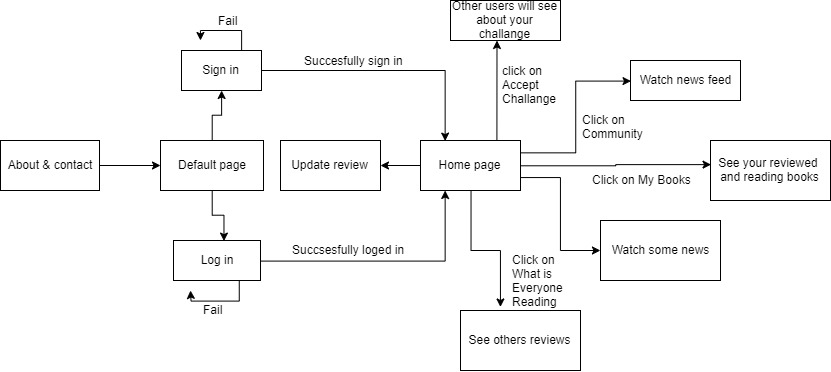
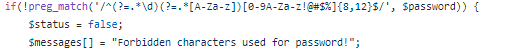
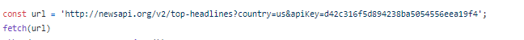
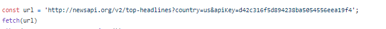
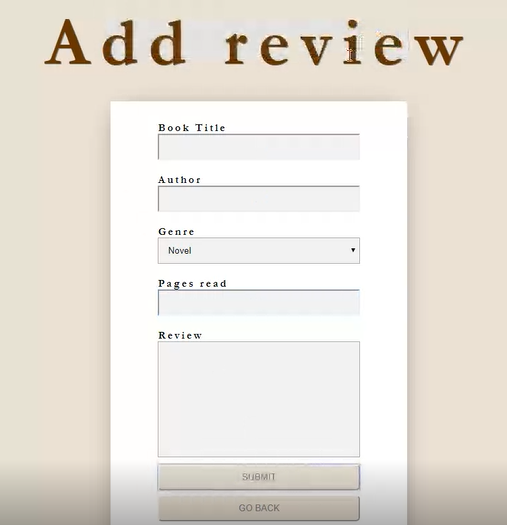

-
1. Introducere
Se dorește crearea unei aplicatii Web care permite specificarea progresului și exprimarea opiniilor/adnotărilor referitoare la lecturile realizate de o persoană sau grup de persoane (e.g. o clasă de elevi, club de lectură). Sistemul va realiza managementul cărților parcurse, inclusiv organizarea lor pe diverse criterii: categorie, autor, editură, an, ediție, legături cu alte cărți înrudite etc. Se vor oferi statistici diverse ce pot fi exportate în formate deschise (minimal, CSV și DocBook). Diversele anunțuri (o persoană a recenzat o carte, a apărut un alt volum de interes, modificarea clasamentului celor mai apreciate lucrari dintr-un anumit domeniu etc.) vor fi expuse ca flux de știri RSS.
Cerinte principale:
- Optiunea de inregistrare/logare
- Flux de stiri
- Newsfeed cu detalii despre actiunile celorlalti utilizatori
- Posibilitatea exprimarii opiniei despre o anumita carte
- Posibilitatea de a vedea parerile altor utilizatori despre carte
2. Diagrama
-
3. Structura
Aplicatia incepe cu un meniu default din care utilizatorul este nevoit sa se inregistreze sau autentifice pentru a putea folosi functionalitatile site-ului.In caz contrar, pooate accesa doar paginile about si contact

-
3.1 Logarea
Are loc doar daca utilizatorul se afla in baza de date si introduce datele corect
Nu se permite introducerea anumitor caractere nepotrivite
Se trimit mesaje folositoare in cazul esuarii autentificarii

-
3.2 Inregistrarea
Procedura inregistrarii este asemanatoare cu cea din cazul logarii.Aici mai trebuie completat campul email.
Introducerea numelor deja existente,folosirea caracterelor nepotrivite sau introducerea unei parole prea scurte nu vor fi permise si vor veni cu un mesaj de eroare.
- 3.3 Homepage
Este pagina aparuta in urma logarii sau inregistrarii.
De aici sunt disponibile majoritatea optiunilor
Este organizata in 4 sectiuni principale:
- Bara de navigare
- Stiri diverse in format rss
- Optiuni cu privire la citirea unei carti sau la recenzarea\actualizarea recenziei unei carti
- Optiuni cu privire la opiniile celorlalti si in challange


3.4 Newsfeed
Se acceseaza prin optiunea Comunity si afiseaza actiunile celorlalti utilizatori,cum ar fi: recenzarea unei carti,acceptarea unui challange,ce carte isi doresc sa citeasca sau actualizarea unei recenzii

3.5 My books
Permite accesarea cartilor incepute de utilizator impreuna cu editarea unei recenzii in legatura cu aceasta
3.6 Flux de stiri
Prezinta stiri diverse ale unui api
 

3.7 Add review
Permite adaugarea de recenzii oricarei carti. Recenzia este anonima.
-
3.8 Format
De asemenea formatul este unul responsive

-
4. Baza de date
Stocheaza informatii despre carti utilizatorii inregistrati. Schema bazei de date:- Username
- Password
- Id
- Book_name
- Author
- Genre
- Read_pages
- Review
- User_id
- Username
- Message
- Created_at
- User_id
- Username
- Content
- Updated_at
Tabela Users
Tabela Books
Tabela Message
Tabela news
-
5. Evoliutia proiectului
Proiectul a evoulat normal insa a avut etape de stagnare. Au fost discutii atat la nivel de design cat si la nivel de implementare
Aceasta a fost prima pagina default insa am decurs la una mai practica,cu butoane detaliate s.a.

Din punct de vedere al organizarii , am vorbit pe diferite platforme de comunicare si am impartit task-urile astfel incat sa nu avem dificultati in ceea ce priveste compunerea produsului final
-
6. Utilizare
- Pentru a putea folosi aplicația, trebuie ca utilizatorul să aibă creat un cont. În cazul în care acesta nu deține, nu va putea accesa decât pagina principală a aplicației.
- În cazul în care utilizatorul nu are cont, acesta poate crea unul folosind butonul de inregistrare.
- După crearea contului, utilizatorul introduce username ul și parola in pagina de autentificare folosite la înregistrare și va fi redirecționat spre mainpage-ul aplicației.
- In mainpage-ul aplicatiei utilizatorul va putea vedea parerile altor utilizatori despre anumite carti,va vedea un flux de stiri divers ,va putea adauga el insusi o recenzie pentru o carte(caompletand campurile necesare),va putea actualiza recenzia despre cartea pe care o citeste cat si numarul de pagini citite,va putea observa activitatea celorlalti utilizatori in newsfeed si va putea conversa cu alti utilizatori pe un chat